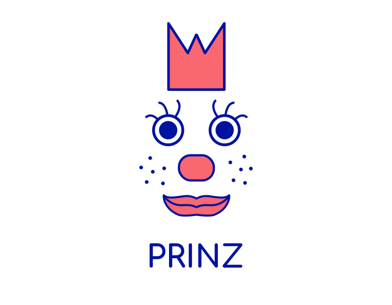

class: center, middle  # Approaches to Serving Machine Learning Models --- ## Agenda .left-half[ - PMML 1.1 Introduction to PMML 1.2 Structure of a PMML file 1.3 Examples 1.4 Pros and cons ] -- .left-half[ - MLflow 2.1 Introduction to MLflow 2.2 Tracking 2.3 Projects 2.4 Models 2.5 Registry ] -- .left-half[ - H20 3.1 Introduction to H20 3.2 H2O models formats 3.3 POJO vs MOJO 3.4 MOJO's graphical representation ] --- ## Introduction to PMML PMML is an XML-based standard language used to represent models. PMML allows you to easily share models between different applications. You can train a model in one system, express it in PMML, and easily move it to another system. PMML incorporates data pre- and post-processing as well as the model itself. .centered-flex[] --- ## Introduction to PMML .left-half[ PMML defines specific elements for several predictive techniques, for example neural networks, decision trees, and clustering models. PMML also defines an element for representing multiple models and therefore can be used to represent model composition or ensemble. PMML is supported by numerous products, including Apache Spark and SAS or IBM statistical tools. ] .left-2-5[ <img src="https://upload.wikimedia.org/wikipedia/commons/f/f3/Apache_Spark_logo.svg"> <img src="https://upload.wikimedia.org/wikipedia/commons/1/10/SAS_logo_horiz.svg"> <img src="https://upload.wikimedia.org/wikipedia/commons/5/51/IBM_logo.svg"> ] --- ## Structure of a PMML file 1. Data Dictionary - identifies and defines input data fields 2. Mining Schema - defines the strategies for handling missing and outlier values 3. Data Transformations - define the computations required for pre-processing the raw input data into derived fields 4. Model Definition - defines the structure and the parameters used to build the model 5. Outputs - define the expected model outputs 6. Targets - define the post-processing steps to be applied to the model output 7. Model Explanation - defines the performance metrics obtained when passing test data through the model (as opposed to training data). 8. Model Verification - defines a sample set of input data records together with expected model outputs --- ## Examples ### The DataDictionary element ```xml <DataDictionary numberOfFields="3"> <DataField dataType="double" name="Value" optype="continuous"> <Interval closure="openClosed" rightMargin="60" /> </DataField> <DataField dataType="string" name="Element" optype="categorical"> <Value property="valid" value="Magnesium" /> <Value property="valid" value="Sodium" /> <Value property="valid" value="Calcium" /> <Value property="valid" value="Radium" /> </DataField> <DataField dataType="double" name="Risk" optype="continuous" /> </DataDictionary> ``` --- ## Examples ### A neural layer and its neurons ```xml <NeuralLayer numberOfNeurons="2"> <Neuron id="3" bias="-3.1808306946637"> <Con from="0" weight="0.119477686963504" /> <Con from="1" weight="-1.97301278112877" /> <Con from="2" weight="3.04381251760906" /> </Neuron> <Neuron id="4" bias="0.743161353729323"> <Con from="0" weight="-0.49411146396721" /> <Con from="1" weight="2.18588757615864" /> <Con from="2" weight="-2.01213331163562" /> </Neuron> </NeuralLayer> ``` --- ## Pros and cons .left-half[ Pros: - Portability and standardization - Decent coverage of standard model types from popular libraries - Model files themselves are semi-readable ] -- .right-half[ Cons: - No support for some modern libraries e.g. PyTorch - Model files are huge ] --- class: mlflow ## MLflow <img id="mlflow-logo" src="./images/h2o.png" alt="MLflow logo" title="MLflow logo" /> - A platform for managing complete ML lifecycle - Open source project with an open interface for integrations - A set of modular components: pick and choose to match your needs --- class: mlflow, mlflow-components ## MLflow components - ### Tracking Save parameters and metrics of runs - ### Projects Capture data science code for sharing - ### Models Deploy models in varying enviroments - ### Registry Store and annotate models --- class: mlflow ## Tracking - API for logging: version, parameters, metrics and _artefacts_ (output files) - UI for visualizing data and comparing metrics - Multiple types of metadata storage: files, databases, an HTTP server - Multiple types of artifact storage: Amazon S3, Azure Blob, GCP - Easy to instrument any existing code --- class: mlflow ## Tracking: saving data ```python import mlflow with mlflow.start_run(): mlflow.log_param("alpha", alpha) # train model mlflow.log_metric("mse", model.mse()) mlflow.log_artifact("plot", model.plot(test_df)) mlflow.tensorflow.log_model(model) ``` --- class: mlflow ## Tracking: UI  --- class: mlflow ## Projects - Packs training tool code and environment configuration for getting reproducible results - Project specification contains: data, code, dependencies and configuration - Project can be contained in a regular folder or a `.git` repository - Provides API for executing projects locally (Linux, Mac) or remotely (AzureML, Databricks, Docker etc.) --- class: mlflow, mlflow-example-project ## Projects: Example definition .left-half[ ``` project/ ``` ``` - MLproject - conda.yaml - main.py - model.py - ... ``` ] .right-half[ ``` MLproject: ``` ```yaml conda_env: conda.yaml entry_points: main: parameters: training_data: path lambda: {type: float, default: 0.1} command: python main.py {training_data} {lambda} ``` ] --- class: mlflow ## Models - MLflow Model standarises packaging machine learning models - Each model can be stored in multiple flavors (`pytorch`, TensorFlow model, R code etc.) - Models can include signatures - It's easy to deploy models from MLflow --- class: mlflow, mlflow-example-project ## Models: Example definition - Calling `mlflow.sklearn.save_model(model, "my_model")` generates the following folder from a `scikit-learn` model: .left-half[ ``` my_model/ ``` ``` - MLmodel - model.pkl ``` ] .right-half[ ``` MLmodel: ``` ```yaml time_created: 2020-12-20T17:28:53.35 flavors: sklearn: sklearn_version: 0.19.1 pickled_model: model.pkl python_function: loader_module: mlflow.sklearn ``` ] --- class: mlflow ## Models: Signatures - It's often required to know properties of the model, e.g.: - what inputs does it expect? - what are the outputs? - `MLModel` file can store model signature - When scoring, inputs are checked against the signature - API enables querying for model signatures --- class: mlflow ## Models: Example signature (JSON prettified from a single-line string) ```yaml signature: inputs: > [ {"name": "sepal length (cm)", "type": "double"}, {"name": "sepal width (cm)", "type": "double"}, {"name": "petal length (cm)", "type": "double"}, {"name": "petal width (cm)", "type": "double"} ] outputs: > [ {"type": "integer"} ] ``` --- class: mlflow ## Models: Deployments - MLflow can deploy models: - locally as REST endpoints - as a Docker container with `pandas` and a REST endpoint - to specialized ML environments like Microsoft Azure ML --- class: mlflow ## Registry - Latest addition to MLflow - Stores model information: - Which experiment and run created the model - Model versioning - Transitions between stages (e.g. from staging to production) - Extra annotations --- ## Introduction to H20 H2O is primary product of H2O.ai company. It's a open source, in-memory, distributed, ML and predictive analytics platform allowing you to build and productionize ML models. H2O contains supervised and unsupervised models like GLM and K-Means clustering, and a simple to use web-UI called Flow. .centered-flex[ <img id="h20ai-logo" src="./images/h2o.png" alt="H2O.ai logo" title="H2O.ai logo" /> ] --- ## H2O models formats H2O supports POJO and MOJO model formats. - POJO - Plain Old Java Object - MOJO - Model ObJect, Optimized Both this formats allow to easily embed them into Java environment. The only required dependency for compilation and runtime is `h2o-genmodel.jar`. --- ## POJO vs MOJO .left-half[ POJO: - max 1G source file size - POJO don't support GLRM, Stacked Ensembles, or Word2Vec models - POJO predict cannot parse columns enclosed in double quotes (for example, “”2””) ] -- .left-half[ MOJO: - no source file size limit - MOJO supports more algorithms (Deep Learning, DRF, GBM, GLM, GAM, GLRM, K-Means, PCA, Stacked Ensembles, SVM, Word2vec, and XGBoost models and models generated by AutoML) - generally faster and smaller (at large scale, MOJO is 20-25x smaller and 2-3x faster in "hot" scoring, 10-40x faster in "cold" scoring) ] --- ## MOJO's graphical representation H2O has build-in tool PrintMojo that allows to generate graphical representation of MOJO model. Example GBM model: .centered-flex[ <img src="http://docs.h2o.ai/h2o/latest-stable/h2o-docs/_images/gbm_mojo_graph.png" style="width: 30em; margin: 0;"> ]